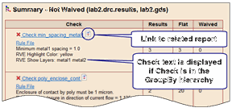
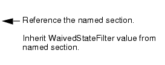
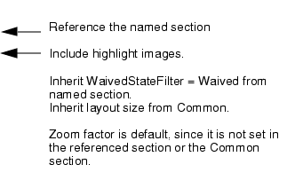
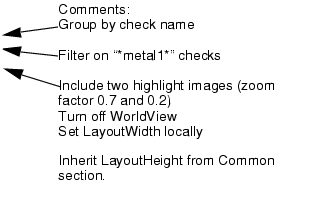

More examples — For additional examples which include DRCHistogram and DRCColormap reports, see the chapter “Calibre RVE HTML Reporting” in the Calibre Solutions for Physical Verification manual. These examples illustrate DRC HTML reports for Calibre Auto-Waivers flow, Calibre PERC LDL CD, and Calibre LFD results.
The following figure shows a brief example of a DRC HTML report. The command line and files that created this report are described in detail following the figure.
Command line:
% calibre -rve -drc -input lab2_batch_path.txt -report rpt_ex.ini
-outputdir batch_ex -summaryfile lab2.drc.summary
Input files:
lab2_batch_path.txt — A DRC HTML Report Database Map File. This file specifies the DRC Results Database, the layout database, and a Calibre DESIGNrev layer properties file, as shown here:
lab2.drc.results,,lab2.gds,process.layerprops
rpt_ex.ini — The DRC HTML Report Configuration File Format. The text for this file is later in the section.
lab2.drc.results.cto — A DRC RVE Check Text Override File (CTO File) Format, which is used to specify the highlight color and the shown layers in the highlight image. See “Specifying Highlight Colors in DRC HTML Reporting” for more information. For this example, the CTO file has the following contents:
# Check Text Override (CTO) file
min_spacing_metal*
RVE Highlight Color: yellow
RVE Show Layers: metal1 metal2
metal1_enclose_cont
RVE Highlight Color: yellow
RVE Show Layers: metal1 contact
lab2.drc.summary — A DRC Summary Report created by the Calibre run that created the results database.
Custom.htm — The HTML Customization File for DRC HTML Reports is specified using the key CustomizationFilePath within the configuration file.
Output directory and files:
The DRC HTML report is named index.htm and created in the output directory batch_ex in this example. All supporting files are located in the output directory.
Configuration file and output description
Each section in the configuration file is described below and the resulting report section is shown. The complete configuration file is included at the end of this example.
Common section
This example common section specifies a customization file and the directory for the Calibre DESIGNrev preferences file. The customization file is listed in “Example” in the section “HTML Customization File for DRC HTML Reports”, and adds a header and footer to the report.
[Common]
CustomizationFilePath = ./Custom.htm
DrvOptionsFilePath = ../
LayoutWidth = 150
LayoutHeight = 200
WorldView = 1
DRCResultsSummary report section
This example includes two sections that produce a DRCResultsSummary report. The first summary includes not waived results only and the second includes only waived results.
|
 |
DRCResults report section
The first DRCResults report section references the section “Summary - Not Waived” and does not include any highlight images.
|
 |
The report section is shown below, and corresponds to the Result View in Details format displayed by Calibre RVE for DRC.
The second DRCResults report section includes highlight images.
|
 |
The report section is shown below. The CTO file lab2.drc.results.cto specifies the shown layers and the highlight color; see “Specifying Highlight Colors in DRC HTML Reporting”.
DRCHighlight report section
The DRCHighlight report section in this example does not reference a named report section. It applies a check filter, which matches two check names in this example.
|
 |
The DRCHighlight Report is shown below. Two check names (min_spacing_metal1 and metal1_enclose_cont) match the check filter. The highlight image for check min_spacing_metal1 shows all three results for the check. The CTO file lab2.drc.results.cto specifies the shown layers and the highlight color; see “Specifying Highlight Colors in DRC HTML Reporting”.
Complete configuration file
[Common]
CustomizationFilePath = ./Custom.htm
DrvOptionsFilePath = ../
LayoutWidth = 150
LayoutHeight = 200
WorldView = 1
;
[Summary - Not Waived]
ReportType = DRCResultsSummary
GroupBy = Check
WaivedStateFilter = NotWaived
[Summary - Waived]
ReportType = DRCResultsSummary
GroupBy = Check
WaivedStateFilter = Waived
Highlight = 1
[Results - Not Waived]
ReportType = DRCResults
GroupBy = [Summary - Not Waived]
[Results - Waived]
ReportType = DRCResults
GroupBy = [Summary - Waived]
Highlight = 1
[Highlight - metal1 checks]
ReportType = DRCHighlight
GroupBy = Check
ZoomLayoutFactor = 0.7, 0.2
CheckFilter = *metal1*
WorldView = 0
LayoutWidth = 200